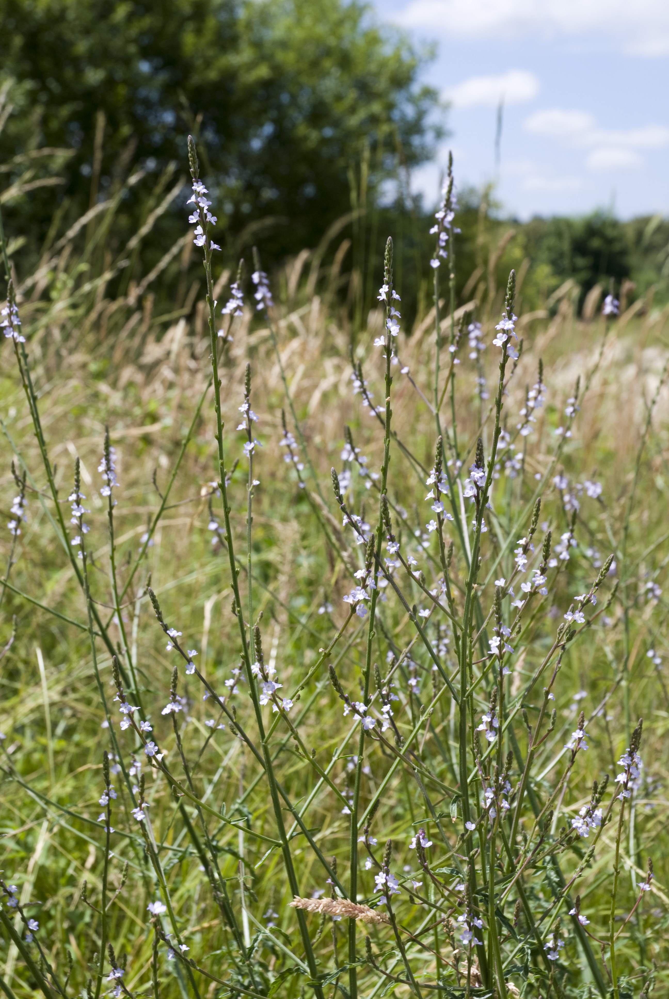

Verbena spp.
| common name | blue vervain, swamp vervain, vervain, verveine | |
| en español | verbena del pantano | |
| plant family | Verbenaceae (verbena) | |
| parts used | fresh and dried leaves and flowers |
from Wikimedia Commons by user Cody Hough - Own work, CC BY-SA 3.0
{kind=link}
 from Wikimedia Commons by Olivier Pichard - Own work, CC BY-SA 3.0
{kind=link}
observations/description
dried leaves and flowers
- long pieces of light green leaf, some pale beige
- appear to be very small reddish brown pieces as well, perhaps flowers/flower buds?
- very light aroma, maybe lemony, maybe floral, hard to identify
"Verbena hastata", Wikipedia
- stems are square, hairy, and green to reddish in color
- leaves are opposite, simple, and have doubly-serrate margins and a variety of shapes, from lanceolate to ovate, and may have 2 lateral lobes
- inflorescence is a panicle, or group, of flowering spikes with densely packed, numerous 5-lobed flowers
- flowers are violet or deep purple, rarely white
- they open from the bottom of the spike upward, with only a ring of a few flowers open at a time
"Verbena officinalis", Wikipedia
- lobed leaves are toothed
- delicate spikes hold clusters of two-lipped mauve flowers
distribution/conservation status
"Verbena hastata", Wikipedia
- native in the United States in all states except Alaska and Hawaii; in Canada, it is native in the provinces of British Columbia, Saskatchewan, Manitoba, Ontario, Quebec, New Brunswick, Nova Scotia, and Prince Edward Island.
- prefers moist conditions and typically grows in wet meadows, wet river bottomlands, stream banks, slough peripheries, fields and waste areas
- it is adapted to wetlands and can spread to form small colonies
- listed as 'Secure' by NatureServe
"Verbena officinalis", Wikipedia
- native to Europe; one of the few species of Verbena native to regions outside the Americas
- the only member of its genus in much of its range
- has been introduced to North America
primary actions
The Yoga of Herbs, p. 217
- antipyretic, expectorant, astringent
The Modern Herbal Dispensatory, p. 192
- bitter, diaphoretic, diuretic, expectorant, hypotensive, nervine, relaxant, analgesic
The New Age Herbalist, p. 124
- nervine, sedative, nervine tonic, analgesic, hepatic, galactagogue
system affinities
nervous
energetics
The Yoga of Herbs, p. 217
- reduces pitta, kapha; increases vāta
- bitter taste - pungent post-digestive effect
- cooling
The Modern Herbal Dispensatory, p. 192
- slightly cooling, drying, relaxing
primary uses
The Modern Herbal Dispensatory, p. 192
- relaxes the nerves and combats anxiety
- helpful for nervous exhaustion from long-term stress or hard-driving personalities
- useful for those who store such tension in neck and shoulder areas
- helpful for anger
- can alleviate some types of headaches, including some migraines (incl. those associated with PMS)
- can be helpful for neuralgias and surface/peripheral nervous system problems
- useful for spasmodic nervous disorders (e.g., tics, palsy, Tourette's)
- helpful for mild pain and colds, flu, and respiratory congestion
The New Age Herbalist, p. 124
- strengthens the nervous system
- dispells depression and counters nervous exhaustion
- effective in treating migraine and headaches of the nervous and bilious (i.e., related to foul mood/bad temper) kind
- prescribed for disorders of the liver and gallstones
- glycosides increase milk flow and promote onset of menstruation
- good mouthwash for infected gums
witchcraft
The Witch's Encyclopedia of Magical Plants, p. 315
- regarded as sacred and used for consecrating ritual or temple spaces for prophecy
- used as an aphrodisiac and in love potions/charms; also good luck charms
- believed to offer protection from witches, lightning, demons, thieves, faeries
- planted on graves to prevent the deceased from becoming a vampire
- also believed to be used by witches
- elements: air, earth, fire
- astrological influence: capricorn, gemini, sagittarius, sun, venus
extra information
The Modern Herbal Dispensatory, p. 192
- the common name 'blue vervain' refers mainly to Verbena hastata but also to V. officinalis
pharmacology
The New Age Herbalist, p. 124
- glycosides (verbenalin, verbenin), alkaloid (unidentified), bitter principle, volatile oil, tannin
contraindications/pharmaceutical interactions/warnings
The Modern Herbal Dispensatory, p. 192
- extremely large doses may cause nausea and vomiting
- large doses may stimulate miscarriage during pregnancy
- traditionally, normal doses protect against miscarriage
The New Age Herbalist, p. 124
- avoid during pregnancy
preparations
The Modern Herbal Dispensatory, p. 192
- weak infusion
- dried leaf and flowers, 15 g: 1 L
- southern decoction
- dried leaf or root, 30 g: 2 L, decoct to 500 mL
- strong lymphatic and diaphoretic
- tincture
- fresh leaf and flowers, 1:2, 60% alcohol
- dried leaf and flowers, 1:5, 40% alcohol
- glycerite
- dried leaf and flowers, 1:6
Herbal Materia Medica, p. 38
- standard infusion
- dried flowering herb, 1:32
- tincture
- (dried) flowering herb, 1:5, 60% alcohol
dosage
The Modern Herbal Dispensatory, p. 192
- weak infusion: 8 oz, up to 3/day
- southern decoction: 1 cup as needed
- tincture: 5-10 drops to 1-2 mL, up to 4/day
- glycerite: 1-5 mL, 3-4/day
Herbal Materia Medica, p. 38
- standard infusion: 2-5 oz, up to 3/day
- tincture: 30-90 drops, up to 4/day
personal experiences/simples
macerate (1 tbsp: 16 oz, 12 hours), dried leaf
- warm amber color
- aroma is slightly more pronounced but still hard to parse
- bitter! was not expecting it to be so pronounced for some reason
- long aftertaste in the back and sides of the mouth, complex notes
- second sip (each successive sip) much less bitter, also sweeter and nuttier
- can feel air more in my nostrils and nasal passages, especially right after sipping
- prior to drinking i was feeling uncomfortable (slight congestion, achiness, headache, almost feeling the onset of fever) and now i can feel that tension dissipating
tisane (1.5 tsp: 12 oz, 10 minutes), dried leaf
- orangy amber color
- aroma is a bit sweet/nutritive/vegetal
- again surprised by the bitterness
- again, bitterness softens as i drink
- all in all very similar to the experience of the macerate, except warm
recipes
sources
Easely, Thomas and Steven Horne. The Modern Herbal Dispensatory (2016)
Frawley, David and Vasant Lad. The Yoga of Herbs: An Ayurvedic Guide to Herbal Medicine (1986)
Goldberg Blackthorn, Samantha. Ace of Cups Herbal Medicine and Botanical Magic Herbal School (2024)
Kynes, Sandra. The Witch's Encyclopedia of Magical Plants (2024)
Mabey, Richard et al. The New Age Herbalist (1988)
Moore, Michael. Herbal Materia Medica, Fifth Edition (1995)
"Verbena hastata" on Wikipedia. Retrieved 13 May 2025.
"Verbena officinalis" on Wikipedia. Retrieved 13 May 2025.